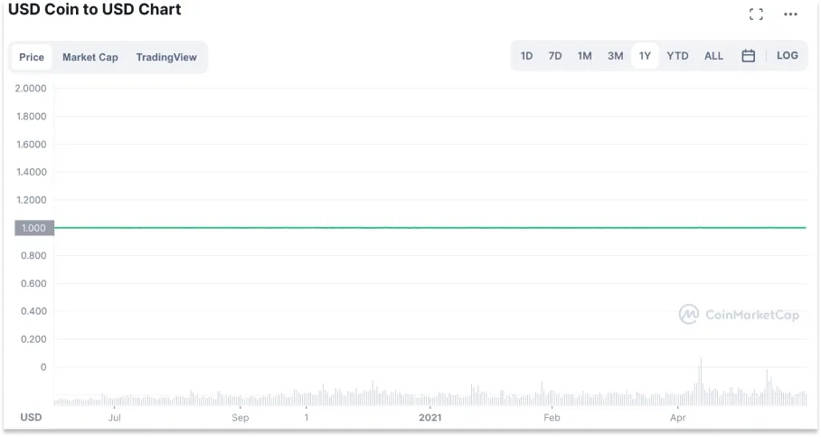
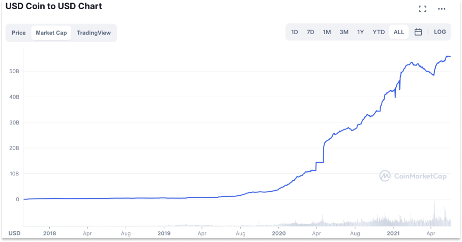
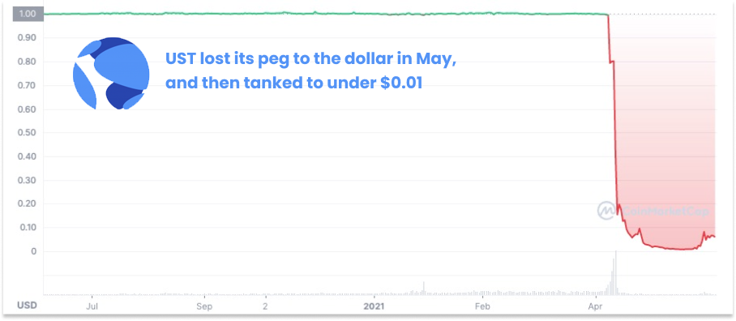
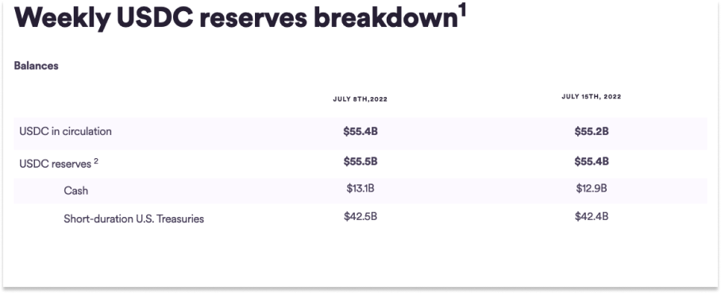
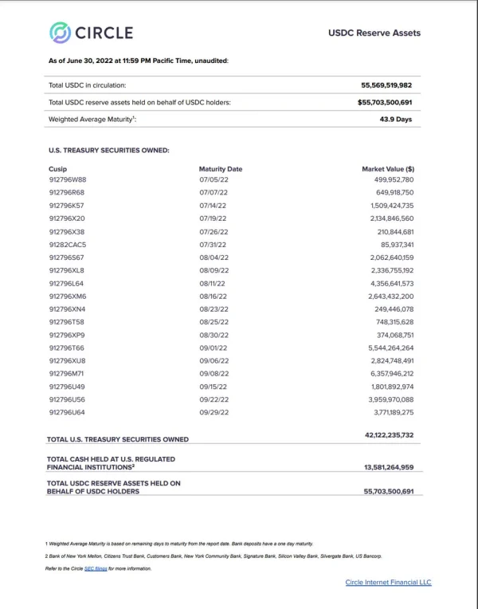
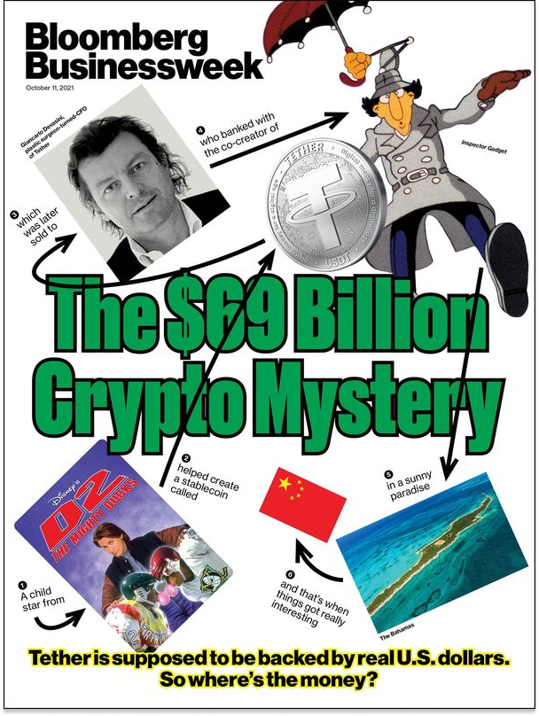
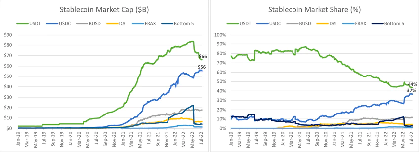

稳定币的野望：重构金融的未来
Updated: Aug 22, 2022
随着加密货币崩溃的尘埃开始落定，人们已经开始在废墟中寻找上一个周期中哪些产品是有价值的，哪些是虚假的泡沫。除了那些持怀疑态度的人之外，有一个类别似乎被一致认为是有用的，那就是稳定币。
而在稳定币中，共识似乎是USDC是其中最稳定的。它们既是一种数字货币，又是一种平台，可以在上面建立新的应用，或改进旧的应用。但为了实现这一承诺，它们需要真正的稳定。一个以美元计价的稳定币，如USDC，在任何时候、任何地方都能兑换成美元。如果一个稳定币可以被信任来履行这一基本义务，那么开发者就可以开始在现代数字轨道上构建金融产品。他们会建立全新的应用程序，如DeFi协议。其他情况下，他们将撕掉旧的金融基础设施的碎片，用更新的轨道来取代它们。
革命不需要是全面的，而是有影响的。Circle是一个妥协的案例。它是一个中心化的公司，促进了去中心化金融系统的发展，它被web2、web3和web2.5的公司所使用。它促进快速、廉价的全球支付和贷款。 USDC在熊市中表现出色，它的市值在整个市场萎缩时增长。本文具有学术价值，然而不是投资建议。
Circle 和USDC：建立一个稳定的平台
请看所有加密货币中最枯燥无味的稳定的图表：

这是稳定币USDC的1年价格图，这是Circle发行的有法币支持、完全抵押、以美元计价的稳定币。在过去的一整年里，当其他加密货币资产的价格上上下下、涨涨跌跌时，1USDC永远是1美元。

这是USDC自2018年10月成立以来的市值，它代表了流通中的USDC总量。在2022年7月写这篇文章的时候，这个数字是550亿美元。流通的USDC在过去一年中增加了一倍多，在2020年7月至2021年7月期间增长了25倍。由于其价格与1美元挂钩，市值的增加意味着有更多的USDC使用；反之亦然，当人们将其USDC兑换成美元时，市值就会下降。
稳定是一个特点，而不是一个错误。它是Circle第一个产品价值主张的关键--数字美元--也是Circle使命的关键。通过无摩擦的金融价值交换来提高全球经济的繁荣。把USDC仅看作是稳定币，却忽略了该公司的野心：
开发者在此基础上建立新的金融系统的平台
机构投资者用于交易和结算的首选数字货币
实现无摩擦、无边界的价值交换的工具
这是在一个竞争激烈的领域中的一个雄心勃勃的赌注，我们将在这篇文章中介绍其中的许多内容。Circle正试图在信任上实现差异化。在几个月前Luna的UST爆雷之前，我并没有过多考虑稳定币的问题。但随着我的深入研究，我意识到它们是当今web3中最可靠的用例之一，也是该领域的企业家们正在建立的更大愿景中的一个基本构件。
让我们从基础知识开始：
什么是稳定币？
稳定币发行者如何创造收入？
为什么稳定币是一种有价值的原始物？
USDC和Circle是怎样的一个平台？
Circle的竞争优势是什么？
建立在Circle的API上的新金融系统会是什么样子？
什么是稳定币？
如果你最近关注加密货币市场，你可能已经听到了 "稳定币 "这个词，并笑了笑。"稳定币，是吧？"你会打趣道，"不是很......稳定😂。"

2022年5月，UST（Terra的稳定币）失去了与美元的挂钩，迅速使得整个Luna生态系统走向死亡螺旋。最终，它使加密货币对冲基金Three Arrows Capital倒下，这也导致了加密货币的雪崩：Celsius、BlockFi、Voyager和其他中心化金融服务（"CeFi"）平台纷纷暴雷或者宣布破产。
UST的情况使任何研究数学或逻辑的人都会发现：并非所有稳定币都是平等的，不是所有的稳定币都是......稳定的。稳定币的目标是保持与参考资产挂钩。对于大多数稳定币来说，这就是美元。因此，一（1）个美元稳定币--如USDC--应该价值1美元。 任何稳定币要想让市场真正信任它，必须通过的关键测试是：如果用户想在何时何地把他们的稳定币兑换成真正的美元，他们能做到吗？
有三种主要的发行稳定币的模式：
法币支持
加密货币支持
算法模式
关于算法稳定币的Luna的经济模型可以直接搜索，在UST崩溃之后，算法稳定币的市场可能会在很长一段时间内保持缄默，我们不需要在这里花费更多时间。
加密货币支持的稳定币由一篮子加密货币支持，通常是超额抵押，这意味着储备的加密货币的美元价值超过了稳定币的流通美元价值。他们通过要求每个用户在另一种代币（如ETH或BTC）中的存款多于他们提取的稳定币来实现这一点。这里最主要的例子是MakerDAO的稳定币DAI，其市值为72亿美元。以下是它的工作原理：想要贷款的用户通过向智能合约发送ERC-20代币，如ETH、Wrapped BTC和USDC，打开一个金库，并收到DAI作为回报。DAI借款是超额抵押的，这意味着你需要在你选择的ERC-20代币中投入比你拿出的DAI更多的美元价值，更高的抵押率取决于你存入的代币的波动性和流动性。目前，ETH的最低抵押率为170%，Wrapped BTC为175%，Staked ETH为185%。在任何时候，你都可以把你的DAI存回去，解锁你锁定的ERC-20。然而，如果你选择的ERC-20的价格下降到一个点，打破了最低抵押率，Maker将进行清算（出售你的代币）。借用DAI的缺点是你需要提供大量的抵押品：目前，用ETH借入DAI需要170%的最低抵押率，这意味着我需要投入至少价值17000美元的ETH来获得10000个DAI，还必须支付可变年费，目前ETH存款的年费为0.50%。另外，如果ETH的价格下降到一个点，打破了这个比例，智能合约通过出售ETH来清算我。这可能意味着你可能被迫在一个不恰当的时间卖出。DAI对借款人的好处是，它完全在链上，不需要中心化的中介机构，而且与你现有的加密货币持有量配合得很好。DAI作为一个协议的优势在于，通过超额抵押和低于某些阈值的清算，它可以保持稳定，并遵守承诺，即用户可以在任何合理的情况下用DAI赎回他们的ERC-20代币。因此，即使在最近的动荡中，DAI也保持了良好的状态。在写这篇文章的时候，它的交易价格在1美元左右。还有其他加密货币支持的稳定币与美元挂钩，还有一些与美元以外的资产挂钩。有些只是想成为储备货币本身。例如，OlympusDAO在其储备中混合了各种代币，支持其 "未来的去中心化储备货币 "还有其他有前途的加密储备货币项目，都在争相建立一个不与任何法定货币价值挂钩的互联网原生储备，但它们与稳定币不同，不在本文的讨论范围之内。
Circle的USDC稳定币是主要的稳定币中：每流通一美元的USDC，Circle就持有价值1美元的现金和美国国库券，对于这些资产，世界上有流动性最好的市场。如果你想用1美元赎回1美元，不需要发生任何魔法。美元就在那里，要么就在纽约梅隆银行和其他大银行的USDC储备银行账户中，要么就投资于短期国债，而短期国债比世界上其他任何东西都更容易兑换成美元。Circle在其网站上发布每周报告和每月证明。

在最近的一次采访中，Circle首席财务官Jeremy Fox-Geen说，“Circle的客户可以在一天内赎回所有的USDC。我们可以处理这些赎回，他们拿回美元的时间的唯一限制是法币银行系统本身的结算系统的限制。"一些人对Circle和USDC表示担忧，从集中化机构不可信任的观点到其与贝莱德围绕Circle储备基金的协议结构问题。这些担忧归结为，当客户想要赎回USDC时，是否总是有美元可用，这又分为Circle是否以它所说的资产（现金和短期国债）持有其储备，以及Circle的业务运营和USDC储备是否分开。许多这些说法似乎源于对USDC如何运作的误解以及USDC和Circle本身之间的差异。针对第一点，即Circle是否持有它所说的东西，在哪里，以及它到底持有什么，Circle在其持有的东西方面一直非常透明。过去，它持有商业票据、公司债券和市政债券，但在2021年9月，根据Grant Thornton的2021年Circle审查报告，它将其所有的USDC储备转移到现金和现金等价物。该公司在一篇博文中写道，稳定币的增长 "理所当然地引起了联邦监管部门的极大关注"，并且它将以现金和短期美国政府国债持有所有USDC储备，鉴于我们致力于保持高标准，在某些情况下，这超出了我们监管机构的要求。除了每月的证明和年度审计，上周，Circle首席执行官Jeremy Allaire在推特上发布了该储备金持有的CUSIP级别的明细。

他说，该公司正在努力获得银行合作伙伴的许可，以披露其在每家银行的持股数量。关于第二点，Circle的业务运营与USDC的分离，Circle提供的产品与USDC是分开的，比如API、SeedInvest和Circle Yield。鉴于最近Celsius、BlockFi、Voyager和其他公司的崩溃，投资者和评论员最担心的是Circle Yield，但Circle的产品不同，它只提供给机构认可的投资者。目前，它提供的利率非常低。
重要的是，Circle的收益率产品并不触及其USDC储备。Circle不会把它的USDC储备借给任何人，它让机构认可的投资者在他们自己的USDC上获得收益。更广泛地说，Circle已经公开表示，其USDC储备资金是为了USDC代币持有人的利益而持有的。Circle现在和将来都不会用USDC持有人的钱来经营其业务或支付其债务。这些资金都在独立的账户中。此外，Circle被监管为货币服务企业，并根据管理美国主要支付机构（包括Stripe、PayPal和苹果）的规则和州级货币传输许可证获得许可。但要清楚的是：一切都有风险。理论上，在我看来，USDC最大的风险是它的一个银行合作伙伴内爆或美国政府拖欠债务，在这种情况下，我们无能为力。但是必须指出的是，尽管USDC似乎是稳定币中最稳定的，但风险总是存在的，人们总是需要对他们的钱谨慎行事。Circle和Concord Acquisition Corp.就拟议的SPAC交易向美国证券交易委员会提交的S-4在第29和30页列出了23项风险。根据与投资者和其他加密货币的对话，USDC是市场上最值得信赖的稳定币。正如一位深耕于加密货币交易社区的朋友所说，"在这个领域里，任何持有稳定币的合法人士都持有USDC。"目前，USDC有548亿美元，这意味着它通过其银行和托管伙伴持有价值相同的现金或国债。每年，Circle的储备都由一家领先的公共会计师事务所进行审计，每个月，会计师事务所Grant Thornton LLP都会证明它的储备与未偿还的USDC一样多。
Tether是稳定币USDT的公司，多年来因担心它如何处理换取USDT的钱而多次受到攻击。对Tether最严重的指控之一是，其首席财务官Giancarlo Devasini用Tether储备来填补加密货币交易所Bitfinex资产负债表的漏洞，这特别令人不安，因为这意味着Tether没有完全的资产储备，而且Devasini是Bitfinex的一个大投资者。在最近针对Tether的索赔中，正如彭博社报道的那样（Tether否认），其储备金部分由数十亿美元的商业票据支持，并且它以比特币为抵押品向其他加密货币公司借钱。此外，该公司与纽约总检察长的诉讼案达成和解，"指控他们转移了数亿美元以掩盖8.5亿美元的混合客户和公司资金的明显损失"，金额为1850万美元。

尽管有热度，有诉讼，有政府审查，Tether的合法性已经争论不休，不在本文的讨论范围内，但值得注意的是，尽管有170亿美元的净流出，Tether目前的交易价格为1美元。Jeremy Allaire在Bankless播客上说，他相信Tether会存在很长时间。Tether的挑战的核心是该公司不透明，没有披露其资金的存放地点和持有的财产。透明度是Circle脱颖而出的地方。通过赢得更多的信任，USDC正朝着取代USDT成为最大市值稳定币的方向发展。

信任是稳定币的基础：人们需要相信他们的互联网美元会给他们带来法币，信任是USDC与USDT抢夺市场份额的主要原因，也是法币支持的稳定币仍然比算法或加密货币支持的稳定币大得多的原因之一。不过，维持信任并不容易，它需要抵制诱惑。
稳定币发行人如何创收？简单地说，稳定币发行商的收入公式是：
稳定币发行商的收入 = 储备金 * 储备金的收益率
稳定币发行商可以通过两种主要方式来增加收入。
增加储备金
储备金产生更高的收益率
增加储备是很简单的。当一个稳定币发行商发行更多的稳定币时，它用客户的1美元换取它创造的1美元面值的稳定币。它将这1美元放入其储备中。如果有人赎回，他们就把这1美元换回1个稳定币。因此，你可以像大多数公司一样考虑这个增长：提高产品的使用率。
在储备金上产生更高的收益率就有点复杂了，这也是稳定币发行商可能陷入困境的地方。稳定币发行商需要产生一些收益，这就是业务运作的方式。在以美元支付赎回的情况下，保持每一块钱都是美元，可以保证永远有一块钱可用（假设你存放的银行不倒闭），但银行账户几乎不产生任何收益。其次，风险最小的是短期美国国债，如1个月和3个月的T-Bills。3个月国债的收益率通常被称为 "无风险利率"。今天，3个月的T-Bills的利率为2.29%，这意味着10亿美元的储备金投资于3个月的T-Bills，每年将产生2290万美元的无风险*利息收入。(没有什么是真正无风险的）
但对某些人来说，让10亿美元坐在那里赚取无风险利率太无聊了。还有更多的钱可以赚! 有一堆不同的方法来产生更高的储备金收益率，包括：部分准备金模式（如银行）意味着你可以将一美元多次借出。将储备金投资于风险较高的资产，应能产生较高的每一美元的收益率。风险较高的资产可能包括期限较长的国债（如10年期国债）、商业票据、商业票据、美国存款、DeFi、加密货币贷款，甚至股票或基金投资。将25%的储备金投入到甚至风险稍高的债务中，产生类似4%的收益，这意味着每年增加427.5万美元的利息收入。
但每一个基点的额外收益都伴随着额外的风险。金融市场的历史充满了这样的例子：在大多数市场环境下应该是安全的事情，却被炸得粉碎。像Voyager和Celsius这样的CeFi贷款人的风险比他们看起来更大。公司拖欠债务，国家也会出现债务违约。在全球金融危机期间，部分储备基金被全数提出，几乎摧毁了经济，因为投资者在美联储介入之前从货币市场账户中提取了1720亿美元。在长时间范围内，增加储备金的收益率与储备金的增长是背道而驰的，因为增加收益率会减少人们想要赎回时有美元存在的机会，这最终会减少信任。对于挂钩的稳定币，信任是最重要的。谁通过他们的行动和透明度在投资者中产生了最多的信任，谁就能通过增长而获胜。
Circle选择了增长储备，而不是追逐更高的收益率，以增加收入，赢得信任和储备金的增长。赢得更多的信任，成为开发者和金融机构依赖的标准，以建立新的工具和能力。因为虽然1USDC=1美元的价值主张至关重要，但这只是一个起点。使得稳定币特别引人注目的是它们的数字超能力。
为什么稳定币是一种有价值的等价物？
像BTC和ETH这样的加密货币还没有作为加密经济之外的交换媒介而受到欢迎，主要原因是它们的波动性太大。哪个消费者愿意花1个ETH去租房，然后看着价格在第二天飙升10%？哪个企业愿意为所提供的服务收到1个ETH，而第二天看着价格下跌10%？相对于波动较大的代币，稳定币最明显的好处就是：它们的稳定性。如果交易双方都能合理地假设1USDC=1美元，他们就能像用美元一样进行交易。
更大的问题是，为什么稳定币相对于美元，或银行中介的美元来说是有用的。要回答这个问题，我们需要从我认为对加密货币最基本的理解开始：加密货币赋予数字资产以物理属性。与银行账户相比，现金有一些优势。如果你在床垫下藏有100万美元，而你需要支付给一个商业伙伴10万美元，你可以简单地拿出几叠钱，直接支付给他们。通常情况下，如果你试图通过银行进行同样的支付，你可能需要支付电汇费用（特别是如果你希望交易在同一天结算），甚至需要亲自到银行去签署文件。如果你的同事在另一个国家，这可能是另一笔费用，而且会花上一段时间。哦，今天是星期六？你需要在星期一上午9点至下午4点之间再试试。纸质现金也有一些明显的缺点，把所有的钱放在你的床垫下可能会让你晚上睡得不舒服。如果你的房子着火了，这些钱也会消失。强盗可以闯入你的房子并偷走它。更实际的是，要给你的生意伙伴10万美元，你们中的一个人需要去另一个人那里。如果你们住在附近，这是个小麻烦；如果你们住在不同的国家，这就变得非常不现实。总之，你知道现金的局限性。我们不再经常使用它是有原因的。在网上发送电报，甚至是小金额的Venmos，都比现金方便得多。
但是......一定会有更好的方法，对吗？这就是稳定币正在努力实现的基本目标：具有数字超能力的现金，作为 "更为优越的法币形式"：
可编程
无需权限
无国界
低成本
快速结算
可互操作
高流动性
可编程的意思是，稳定币可以被编码为自动做某些事情。在一个例子中，如果我以稳定币获得我的工资，一个智能合约可以每两周（或每天，或每小时，鉴于交易成本低）自动直接发放资金到我的钱包地址。有些甚至可以发送到我可以赚取收益的DeFi借贷协议，或者自动换成ETH。
无需权限意味着我现在就可以用你的钱包地址给你发送一个稳定币，不需要通过银行，这也意味着，开发者可以建立使用稳定币的应用程序，而不需要通过发行者。
无国界意味着在向你的同一个国家的人和另一个国家的人汇款之间没有区别--这里没有所谓的 "国际电报"，这个过程比试图通过银行汇款要简单、便宜和快速得多。
低成本也意味着持有或发送资金没有任何银行费用。今天，在以太坊上，Gas费可能对较小的交易来说是令人望而却步的，但无论你是发送1美元还是100万美元，这种Gas费都是不变的。但是，在Polygon这样的以太坊第2层上发送USDC、或者像Solana这样更便宜的L1将成本降低到几乎为零。随着时间的推移，寄钱应该像发电子邮件一样便宜。
快速结算：当我向某人汇款，或从某人那里收到钱时，这些钱实际上是在我的账户中，而不是在他们的账户中。如果你曾经在你的银行账户里有待处理的交易，或者收到一笔正在路上但还没有到账的款项，你就感受到了结算缓慢的问题。
可互操作：稳定币可以无缝地插入任何其他web3协议和应用程序，甚至可以插入许多传统公司。互操作性使稳定币的行为有点像平台。
高流动性意味着有足够的稳定币存在，它们可以很容易地被购买或出售。仅在系统中就有超过550亿美元的USDC。例如，如果你把钱寄错了地址，会发生什么？如果你忘记了你的助记词，无法进入你的钱包，会发生什么？在这种情况下，钱也就没了。对于任何数字资产来说，这些都是真实的风险，在购买、持有或发送数字资产之前，你需要确保你使用最佳做法，如热钱包和冷钱包，发送测试交易，随着时间的推移，它应该变得更加安全，因为Circle和更广泛的开发者生态系统正在建立产品和基础设施，以减轻风险并保护用户。作为加密货币，所有这些部分都可以结合和组成，创造新的好处。或者说，企业家们可以将这些功能结合起来，创造出以前不可能实现的新奇应用。
USDC被用于所有这些场景，但Circle真正的野心是成为一个平台，开发者在此基础上建立新的金融产品。Circle并不仅仅是一家稳定币公司。它的故事对于平台和API优先的公司来说是一个熟悉的故事（见：亚马逊AWS）：建立一个消费者产品，建立自己的基础设施，并将基础设施产品化。
Circle的历史：从比特币到USDC
Circle联合创始人兼首席执行官杰里米-阿莱尔（Jeremy Allaire）早在2013年加密货币的早期就创办了公司，以帮助消费者 "更容易转换、存储、发送和接收比特币等数字货币"。Allaire当时已经是一位科技界的资深人士，在创立Circle之前，他已经创立了同名的Allaire Corp.和在线视频服务提供商Brightcove。
1992年，他写了一份关于互联网商业化的提案，并提交给参议院科技小组委员会主席。总之，以Jeremy的背景和早期围绕比特币的兴奋度，他在筹集资金方面没有任何问题：
2013年：900万美元的A轮融资，来自Breyer Capital、Accel和General Catalyst。
2014年：1700万美元的B轮融资，由相同的投资者和Pantera资本领导。
2015年：5000万美元的C轮融资，由高盛和IDG资本牵头，估值2.5亿美元。
2016年：D轮6000万美元，由IDG资本领投，估值4.8亿美元。
2018年：1.1亿美元E轮融资，由Bitmain领投，估值30亿美元。
令人惊讶的是，它在落地并宣布成为其杀手级应用之前，已经筹集了全部2.46亿美元。Circle的产品副总裁Joao Reginatto告诉我，当他七年前加入该公司时，他签约成为Circle的消费者应用程序Circle Pay的产品经理。当时的计划是为那些想通过区块链轨道转移资金的人建立一个产品，这个应用抽象化了复杂性，提供了熟悉的体验。人们对法定货币最为熟悉和舒适，所以他们在比特币的轨道上启用了美元、欧元和英镑的余额和转账。在后台，他们处理所有的流动性和财政业务，如将美元兑换成BTC，然后再兑换。但到了2016年，在比特币上操作就变得太慢了，因为比特币是为了成为P2P货币，而不是为了支持上面的应用程序。然后，他们尝试了ETH，也不太合适。最后，他们意识到，他们需要的是在区块链上运行的法定货币。他们研究了Tether，但不认为他们可以建立在它之上，所以团队意识到他们需要创建自己的稳定币。
2018年9月，Circle和Coinbase推出了USDC，10月，他们宣布共同创立了Centre Consortium，"这是一家合资企业，旨在建立互联网上的法币标准，并为法币稳定币的全球主流采用提供治理框架和网络。" USDC于2018年10月开始流通，到2019年的第一天，有2.88亿美元的USDC在流通。时至今日，Centre由Circle和Coinbase共同拥有，并帮助制定协议的方向，而Circle则是USDC的发行者。Circle在区块链上建立消费金融产品的历史为他们建立USDC的方式提供了参考。首先，它从第一天起就为Circle的监管和合规立场确定了基调。正如Jeremy解释的那样，他和他的投资者对在区块链上经营金融服务最早提出的问题之一是，"这是否合法？"他自掏腰包聘请了国内顶尖的监管咨询公司之一，他们发现，虽然没有很多先例或指导，但还是有一些。2013年3月，美国财政部发布了一份六页的备忘录，题为 "FinCEN的条例对管理、交换或使用虚拟货币的人的应用"。基本上，它说，如果你作为一个从银行系统到数字货币的货币交换者，你必须注册为货币传输者，有反洗钱（AML）和反恐政策，并获得所有适当的许可证。现实是，如果你想在传统和新系统的交汇处建立一个企业，你必须接受监管，否则就会进监狱。改变社会和引入风险的新事物需要新的政策--自动驾驶汽车、人工智能、航天器、遗传学，因为对社会的影响更明显。我想做一些困难的事情，而且是在全球范围内都会很困难的事情。从一开始，Circle的立场就是与监管机构合作，成为对话的一部分，进行教育，并 "维护加密货币的重要意义：开放性、互操作性、可编程性，以及其固有的全球性质。"其次，从尝试在区块链轨道上创建消费者产品开始，意味着当Circle创建USDC时，他们将其作为一个平台，其他开发者可以在此基础上建立无摩擦的用户体验。Circle建立了基础设施，并开始与正在建立应用程序的开发者合作，看看USDC能提供什么帮助，然后DeFi的夏天发生了。
在Uniswap、Compound、Aave和Maker等协议的带动下，DeFi的流行程度激增，在开发者生态系统中产生了爆炸性的影响，并使他们有兴趣将USDC嵌入他们正在创造的所有新事物中。DeFi的开发者带着他们的想法来到Circle：由于USDC是无需许可的，Circle不会给予或拒绝许可，但他们很高兴看到开发者用他们的原始数据构建新事物。USDC的采用推动了Circle的飞速发展。2021年5月，USDC的市值刚刚超过200亿美元，Circle宣布从Fidelity、FTX、DCG等处获得4.4亿美元的融资。同年，它与SPAC Concord Acquisition Corp.签署了一项协议，以40亿美元的价格将其上市。今年2月，它宣布SPAC的估值增加了一倍多，达到90亿美元，4月，它宣布了由贝莱德和富达牵头的4亿美元的融资，因为USDC的市值增长到510亿美元。
USDC和Circle是如何成为一个平台的？
当我第一次与Jeremy交谈时，他告诉我，从一开始，Circle就想为货币建立http或smtp，这些协议是开放的，任何人都可以连接，但允许一些http和smtp没有的东西，即移动价值和结算交易。随着Circle在产品和市场方面的迭代，这一愿景的表现形式发生了变化，但这一愿景本身在USDC的创建过程中保持了一致。他解释说："当我们推出USDC时，概念是作为一个协议，任何人都可以在此基础上建立。"Circle需要提供美元的流动性和市场基础设施，受监管的基础设施以合规的方式将银行资金和美国国债与它所搭载的实体联系起来。一旦USDC开始流通，代币和协议的组合就成为一个任何人都可以在上面建立的平台。现在，Circle团队专注于创建更好的基础设施，为开发者和用户抽象出很多复杂的东西，并扩大其提供的稳定币套件。像Visa、MoneyGram、Twitter和Stripe这样的成熟公司也在与USDC合作，促进加密货币支付。2021年3月，Visa宣布，它已成为第一个以USDC结算交易的主要支付网络。Visa的标准结算流程要求合作伙伴以传统的法定货币进行结算，这可能会增加使用数字货币建立的企业的成本和复杂性。以USDC结算的能力最终可以帮助Crypto.com和其他加密货币原生公司评估根本性的新业务模式，而不需要在其财务和结算工作流程中使用传统法币。Visa的合作关系是对USDC的重要认可--Visa是一家市值4270亿美元的全球移动资金领导者，专注于在加密货币生态系统内进行资金结算。Stripe面向非加密货币原生平台和用户。2022年4月，Stripe宣布引入全球加密货币支付，从Twitter的创作者开始，在Polygon的基础上引入USDC。Stripe强调，加密货币支付将让平台 "快速支付给更多国家的用户，并为那些喜欢加密货币而不是传统法币支付方式的用户改善服务"。与成熟的公司合作，这些公司通常比他们的web3同行更保守，这推动了Circle回答更复杂的问题。与Stripe的人交谈，很明显，他们不只是为了做加密货币而做加密货币；他们需要了解它是如何运作的，直到最微小的细节。Joao说，web2和传统的支付公司更专注于这样的问题："我们应该使用哪个链？或者我们应该使用多条公链？如果我们使用多条，那么桥接到底是如何工作的，它是否安全？"Joao强调：为了让USDC成为数百万开发者的实际平台，我们需要建立起其他金融平台所拥有的基础设施。Circle计划在链上建立大量新的基础设施，并特别关注如何提高开发者的抽象水平。例如，Stripe从Polygon开始，但计划在今年晚些时候扩展到更多区块链。该基础设施应该使USDC的跨链使用变得简单，以至于开发者或用户想要使用哪条链应该是一个实施细节。正如Joao所说："如果有一个商人想在Solana上接收USDC，但付款人在Ethereum上，我们希望能轻松实现。我们需要用跨链、交易所、GAS成本等东西来实现它。"它还可能建立特定的SDK，使web2和web3公司能够轻松地围绕USDC建立产品。想一想你每天使用的应用程序。消耗了我99.99%的应用时间的Twitter，已经通过Stripe与USDC连接。许多最流行的应用程序--如Uber和Airbnb都有内置的钱包。
目前，这些公司需要在多个司法管辖区注册，并根据其运营地点设立不同的银行。例如，Airbnb是欧洲的一家电子货币公司，需要持有并维持一个许可证来持有客户余额。使用类似于Circle钱包的SDK，他们可能能够让用户自我保管，为他们的账户充值，并无摩擦地消费。这些都是非常直接的例子，而且有很多类似的机会，可以直接或间接地为金融web2应用程序建立金融产品。随着Circle按照传统公司更严格的标准建立起工具和基础设施，web3的开发者将获得这些相同的能力， Circle创建的基础设施和USDC本身是开放的、可互操作和无权限。需要有更多的区域性稳定币，代表英镑、日元和世界各地使用的数百种其他法定货币，以便稳定币的全球潜力得到实现。Circle计划不断创造新的、受监管的、有充分支持的稳定币，以及更好、更顺畅的基础设施，创造一个平台，任何有互联网连接和一些技能的人都可以在上面建立。它可以将这些工具免费提供给开发者，同时由于它的赚钱方式，仍然可以建立一个巨大的、有利可图的业务。它甚至有一个风险投资部门，即Circle Ventures，对生态系统中利用USDC的产品进行投资，以加速这一领域的发展。Circle已经迭代成为互联网上最好的商业模式之一。
Circle的竞争优势是什么？Circle的商业模式的美妙之处在于：它不向客户收取任何费用，这增加了它的规模，并通过将其储备投资于安全资产，随着规模的扩大而赚取更多的钱。一个协议在协调交换方面的提取性越低，这种形式的交换就越多。由于Circle不向开发者或用户收取使用USDC的费用--因为它的抽取性最小--更多的交易应该发生在USDC中。随着更多的交易以USDC发生，更多的USDC流通，Circle持有保守的储备，可以按面值将USDC兑换成美元。我认为，这些储备中持有的美国国债部分可以为Circle带来收入，而不需要向用户或开发者收费。我相信团队真正的野心是创造一个更好、更快、更便宜、更开放的金融系统，而且可以把资源投入到建设基础设施上。它正在建立一个平台业务，通过储备金的利息而不是费用来实现货币化。
USDC正在建立网络效应，它有两个来源：平台和资金本身。
首先，随着越来越多的开发者建立在USDC上，USDC获得了更多的效用，在更多的产品中进行交易，这创造了更多的流通需求，这为更多的开发者建立在USDC上并与之整合创造了动力。它成为开发商和合作伙伴寻求建立稳定币的事实上的起点。第二个网络效应来自于货币本身。具体来说，流通中的USDC越多，它的效用就越大。一个简单的方法是，如果你是世界上唯一使用美元的人，那么100万美元是毫无价值的，但如果每个人都使用美元，那么就非常有用。这是经典的梅特卡夫定律：一个网络的价值与网络参与者数量的平方成正比。USDC使用越广泛，它对每个使用它的人和所有建立在它上面的开发者来说就越有价值。由于它的平台就是钱，因此它能够实际上免费赠送其基础设施，并将其储备货币化，Circle应该能够比那些需要向用户收费以建立可持续业务的web2平台和API更快地发展开发者和用户采用。这是Circle面对技术挑战者的竞争优势，但它可能很快就会面临一个更大的竞争对手。人们认为USDC面临的挑战之一是，美国政府可能会发行中央银行数字货币（"CBDC"），部分原因是为了在日益增长的数字经济中维持美元作为全球储备货币的地位。Circle认为，USDC和其他商业美元支持的稳定币给美国带来了两全其美的好处：开放、竞争、资本主义生态系统的创新优势，同时也增加了对美元的需求，因为所有USDC都可以1:1兑换美元。Circle的首席战略官兼全球政策主管Dante Disparte认为，CBDC和商业美元支持的稳定币可以共存。他告诉我，"我们正在建立的是跨境与国内的东西。USDC是互联网规模的，为互联网上开放的、无许可的、更公平的经济活动而设计。CBDC无一例外都是国内的，并将风险转移到纳税人身上。" 时间会证明这一点，但政府可能与其说是一个竞争对手，不如说是一个补充。事实上，Circle与政府合作的技巧和经验是其竞争优势的第二个来源。除了Circle凭借规模获得的优势外，与新进入者和现有竞争者相比，它在监管和合规方面也有优势。在过去的九年里，它倾注了大量的资源和无数的时间来建立一流的内部合规性，获得所有必要的许可证以在美国和国外运营，并与政策制定者合作制定合理的立法。在高标准下运作，它与关键参与者建立了牢固的关系。如果说在最近的崩溃之前，监管机构似乎相当肯定会打击有风险的稳定币，如Luna的UST，那么现在就完全可以保证。很明显，稳定币将被监管，稳定币发行者将被要求达到最高标准。在一个更加规范的空间，Circle的信任将是一个更大的竞争优势，对一些人来说，稳定币的特点是不透明、缺乏监管、无摩擦。他认为，我们将看到美国政府深思熟虑、支持创新的监管，监管者将看到 "相同的风险，相同的规则 "在创造 "支付系统中更多的选择，而不是破坏和拆解银行 "中的重要性。虽然政府不能监管数学，但它可以监管发行稳定币公司的行为。为了与Circle竞争，新的法币支持的稳定币发行商不仅需要克服其强大的网络效应、规模经济和现金生成机器，他们还需要同时建立起Circle拥有的合规基础设施和信任。进入壁垒高吗？是的。在Instagram和TikTok出现之前，与Facebook的竞争也有很高的进入壁垒。最终，该公司似乎愿意支持并与该领域中任何能够为建立一个新的、互联网原生的金融系统作出贡献的人合作。
一个建立在Circle Rails上的新金融系统会是什么样子？
如果你今天要设计一个新的金融系统，从头开始，使用所有的现有技术，你会如何设计？稳定币还有一个好处：将货币的支付功能与货币的借贷功能分开。今天，政府和银行都可以创造货币。政府创造一定数量的货币，人们和企业将他们的钱存入银行账户，然后银行可以根据准备金要求将这些钱的几倍借出去。这就是所谓的 "部分准备金制度"，而银行可以贷出的金额相对于存款来说是由巴塞尔协议III中规定的流动性覆盖率决定的。正如在全球金融危机期间所看到的那样，部分储备银行系统存在一些问题，但《巴塞尔协议III》在解决这些问题方面有很大的进展。 当你把钱存入银行时，他们会一次又一次地把钱借出去，并以此赚取利息。我最近没有检查我的账户，但利息通常低得可笑。仅美国四大银行--摩根大通、美国银行、花旗集团和富国银行--在2021年就创造了1730亿美元的净利息收入。
净利息收入代表银行从贷款中获得的利息收入与支付给储户的利息之间的差额。据推测，今年在利率上升的环境下，这些数字会上升；储户并不关心，不会为了几个额外的基点而转移银行。银行赚钱并没有错，这是他们的工作，很多聪明人已经建立了很多复杂的基础设施来做好它。但这对挑战者来说是一个机会。在DeFi牛市案例中，这1730亿美元代表了可由贷款人赚取或由借款人保存的价值。不同的是，在这个系统中，净利息收入应该归于拥有美元的人，而不是银行。有了稳定币，任何人都可以使用DeFi借贷协议，并借出钱来产生高于0.01%的回报。技术构件已经开始到位，但最大的阻力不是技术，而是法律。在采访中，杰里米赞赏美国政府对互联网的监管方式。当它刚刚起飞时，政府官员谈到让人们和企业申请能够创建一个网站，但幸运的是，他们选择让它保持开放。我们今天的互联网要感谢那些早期的监管决定。今天，稳定币监管正处于二十年前互联网监管的拐点。
开放还是封闭？随着越来越多的人开始使用稳定币进行交易、借贷、获得报酬和在网上做各种事情，随着消费者对这项技术越来越熟悉，很难想象他们会想回到过去的方式。他们想利用全球流动的资金池，以比银行更低的利率借钱买房，而且是即时的、无需权限的，他们希望能够直接从他们的资金中获得比银行账户更多的收入。随着领先的DeFi协议继续证明它们在动荡的市场中的坚固性，以及接口的改进，消费者和机构都会对这个在线金融系统更加满意。这将需要时间，而且有很多东西需要建立和解决。但目前所有的问题都是可以解决的问题，最具影响力的创新可能是我们甚至还没有想到的，有很多类别还没有被创造出来，甚至没有想到。我们有可编程的货币，美元作为一个本地数据类型，你可以用一个协议来互动，以及计算环境（智能合约）来编写与所有这些互动的代码。我们在互联网上有透明、开放、风险管理的信贷设施。
我们正处于建设的早期阶段。有一件事是清楚的：要达到大规模采用，我们需要更好的界面，并且需要看到一个像腾讯微信一样的超级应用程序，它结合了去中心化的身份，去中心化的社交，消息，稳定币，支付，与代币化IP互动的能力。USDC只是基础设施的一个部分。为了让Circle实现其使命--通过无摩擦的金融价值交换提高全球经济繁荣--将需要在使用NFTs、权利、信誉、身份、可扩展的零知识技术等的商业方面取得进展。在web3的怀疑论者中，有一种流行的说法是，我们不需要加密货币，因为银行和金融技术的工作很好。既然有Wise这样的东西存在，为什么还需要用稳定币向国外汇款？但怀疑论者认为，在金融创新方面，我们已经走到了尽头。这在我看来是愚蠢的，而且忽略了金融和技术创新的历史。当然，金融系统将被重构--无论它需要几年还是几十年--似乎USDC将是其中的一个重要部分。
同时，我不认为稳定币会取代银行或金融技术。有时，它们会共存。金融科技公司将在USDC的轨道上建立更顺畅、更快速、更便宜、更全球化的产品，并提供必要的护栏、合规性、接口。而且，这不仅仅是金融科技公司。随着货币和银行业务被嵌入到我们每天使用的更多产品中，以及新技术带来的新产品类别，我预计USDC将成为越来越多公司的技术堆栈的核心部分。用信任的方法建立一个平台，并不是致富的最快方式。但它是最安全的，也是确保USDC不辜负其创造者对提高全球繁荣的愿景的唯一途径，Circle的技术为一个现代的、更公平的金融体系提供动力。